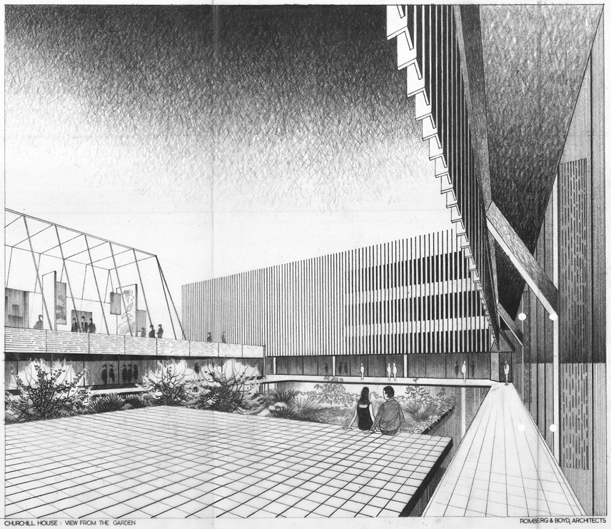

CHURCHILL HOUSE

Churchill House perspective sketch c.1969 (courtesy ACT Heritage Council)


The building is an example of the Late Twentieth-Century Brutalist Style (1960-) with its large areas of blank wall and off-form concrete.
The complex comprises a number of components: the main building with its east and south wings, the separate north wing or pavilion, the pool and the rear carpark.
The main building forms an L shape in plan, and with the north wing it encloses on three sides a courtyard in which the pool is located. The main building is of three storeys with a four storey lift tower at the southeast corner, the north wing is of two storeys, and the carpark is two storeyed.
Information courtesy of: Australian Institute of Architects RSTCA Citation No. R111